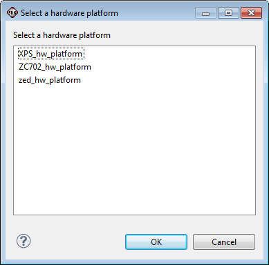
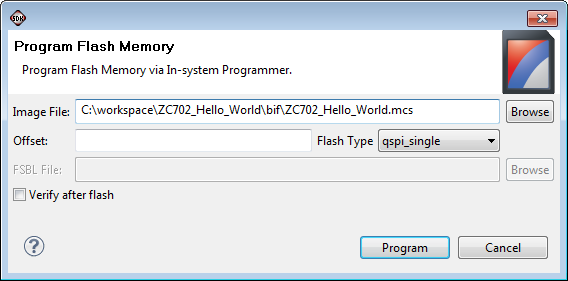
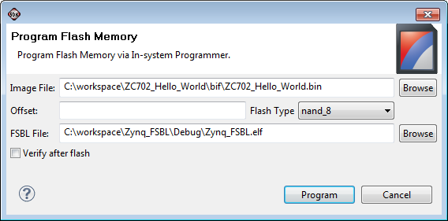

Programming parallel Flash memory for Zynq processors
To program the parallel Flash memory for Zynq™-7000 All Programamble SoC processors:
- Select Xilinx Tools > Program Flash.
- If only one hardware platform is present in your workspace, it will open the Program Flash Memory dialog box based on whether it is a Zynq processor design or a MicroBlaze™ processor design.
- If more than one hardware platform exits, a dialog box opens and prompts you to choose the hardware platform.

- SDK opens the Program Flash Memory dialog box for the Zynq hardware platform.

- Specify the MCS file and Offset value.
- Choose the Flash type, qspi_single/qspi_dual_parallel/nand_8/nand_16.
Note: For Flash types nand_8 & nand_16, you must also input the FSBL file.

- Click to select the Verify after flash check box if you want to verify whether the flashing is done correctly.
- Click Program.
Note: The MCS file is created with the Create Bootgen command in the application project in the bif folder. If you select the application project in the Project Explorer while opening the Program Flash Memory dialog box, the MCS file is automatically populated.
Copyright © 1995-2013 Xilinx, Inc. All rights reserved.